I have made this website for you, dear Lyel. You're the only person who has made me feel this way, you've changed me in a way that I never thought possible. Now, im doing everything I can to keep you, to make you happy. Allow me to show you this small work of mine :)) July 12, 2026 exactly 4 am, di ako makatulog hanggang ngayon 4:37 am ginawa ko yung bugs sa website and mag sulat ng nararamdaman ko para isend sayo para basahin mo pag gising mo heheehheheheheheheheh
My favorite pictures of u 📸
My favorite pics of u hehe :P
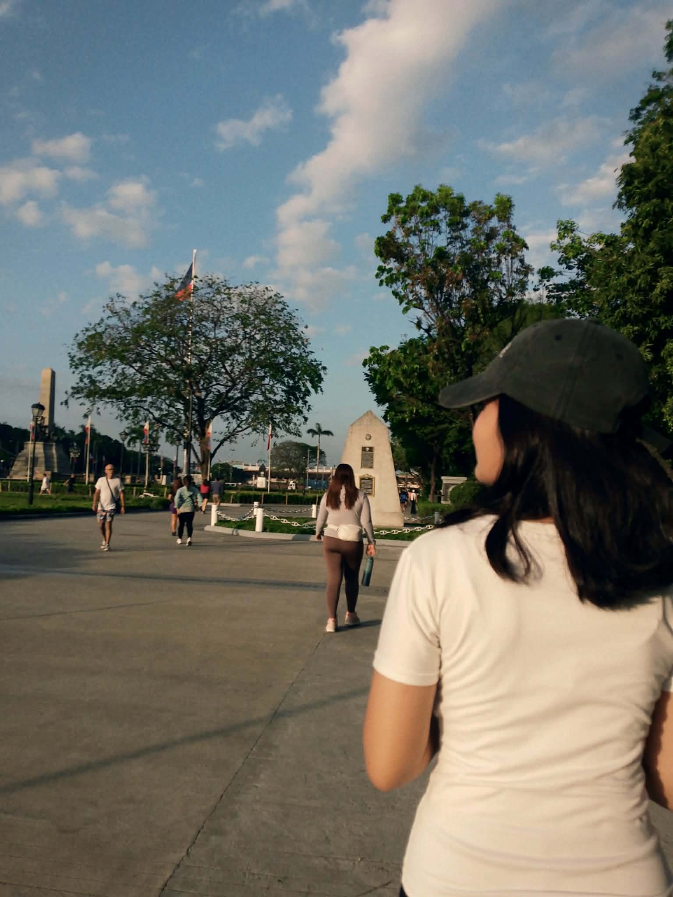
Favorite Candid ko hehe 🌸
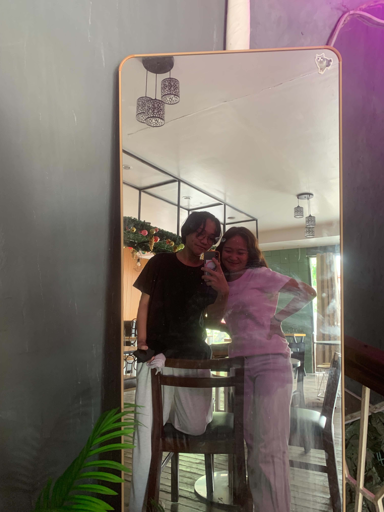
First photo of us bebi :p 🎀
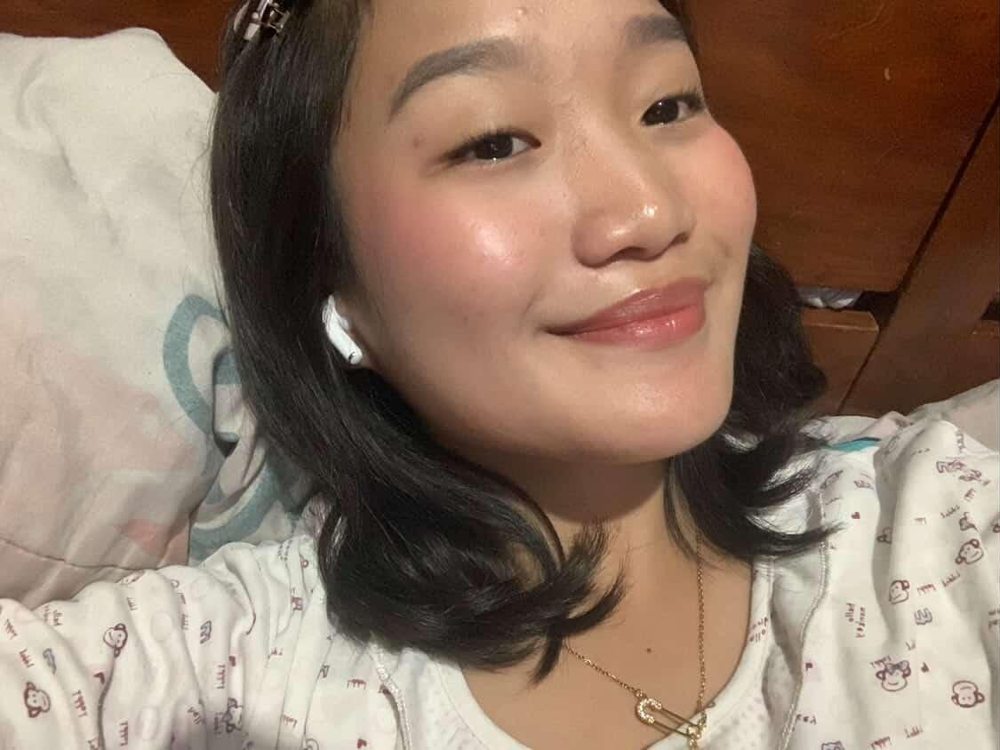
One of my favorite pics of u bebi ✨
My Baby's Favorite Flowers! :D 🌷✨
Nahiya ako nung tinanong ko sayo T-T btw, all these flowers reminds me of u :P
Dahlia
Majestic flower bub, just like you hehe :P
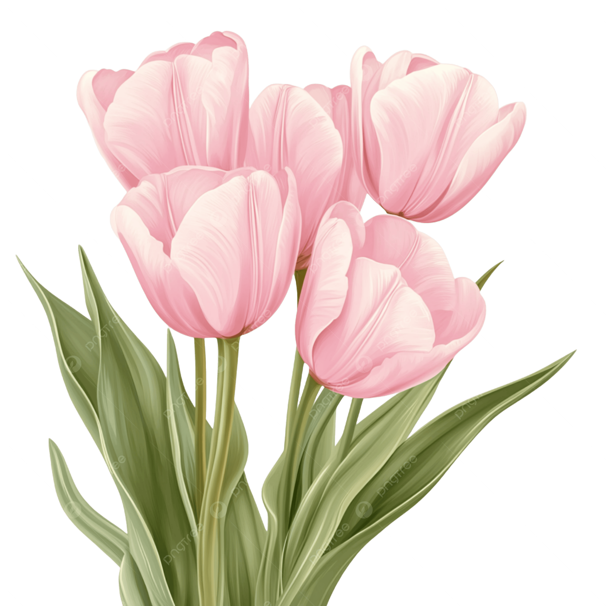
Tulips
Butiful flower, just like you hehe :P
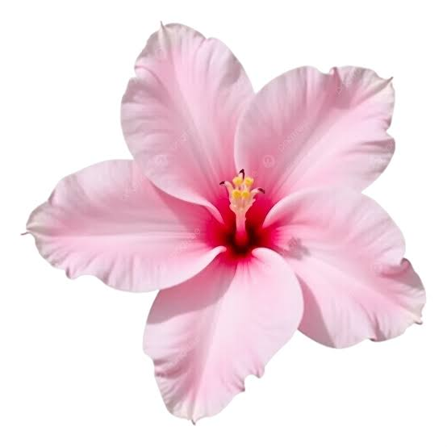
Azalea
Fav flower ko, gaya gaya ka e no
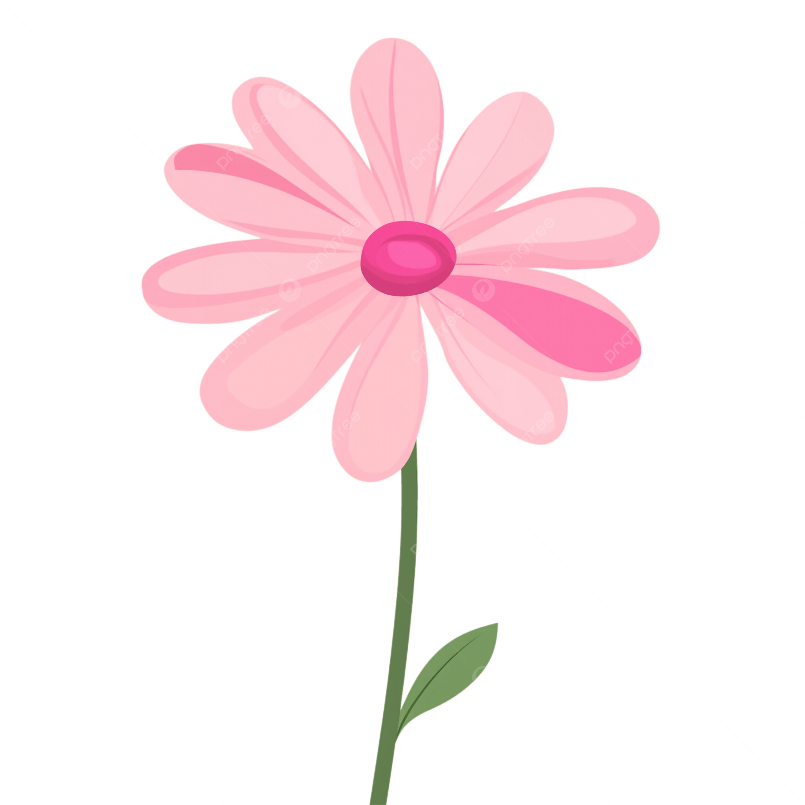
Daisies
One of my fav flowers din, gaya gaya ka talaga e no labyu :D
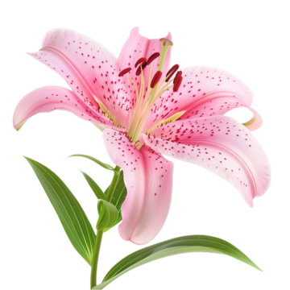
Lily
This is one of my favs din, and this flower reminds me of you legit :>
Your fav foods na alam ko :)
cravings nya tu ih :P
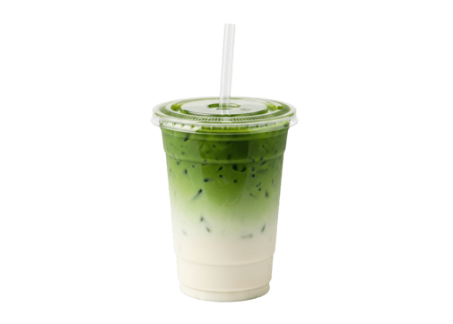
Matcha
Ka una unahang fav drink/food na nalaman ko sayo hihi
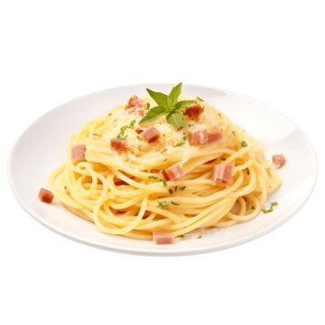
Carbonara
Dito ko nalaman na girl version kita e HAHAHAHAHAHA
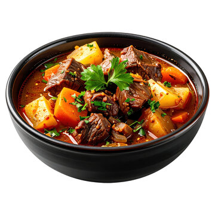
Caldereta
Like dito rinnnn LIKE WOW SAME!
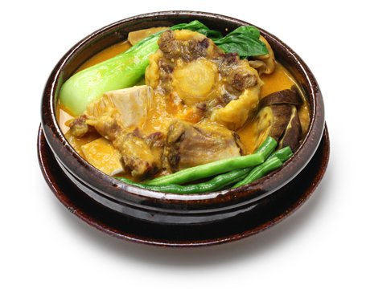
Kare Kare
Izzo great na may kapareho ako e HAHAHAHAHA :P
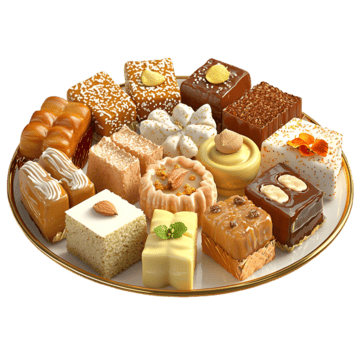
Cookies and any other sweets basta sweets
Di mawawala yung sweets syempre, dito ka lang sumasaya e
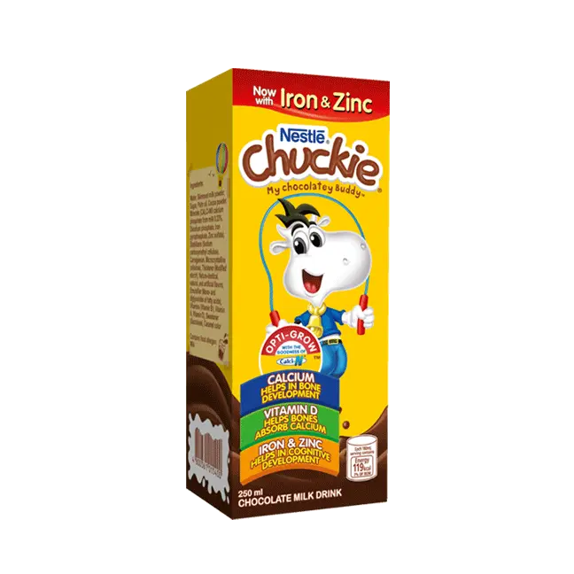
Chuckie
DITO KA SUMASAYA HAHAHAHA bumabalik sa mood e
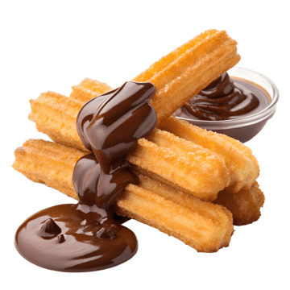
Churros
Hanap tayo nyan HAHAHAHAHA
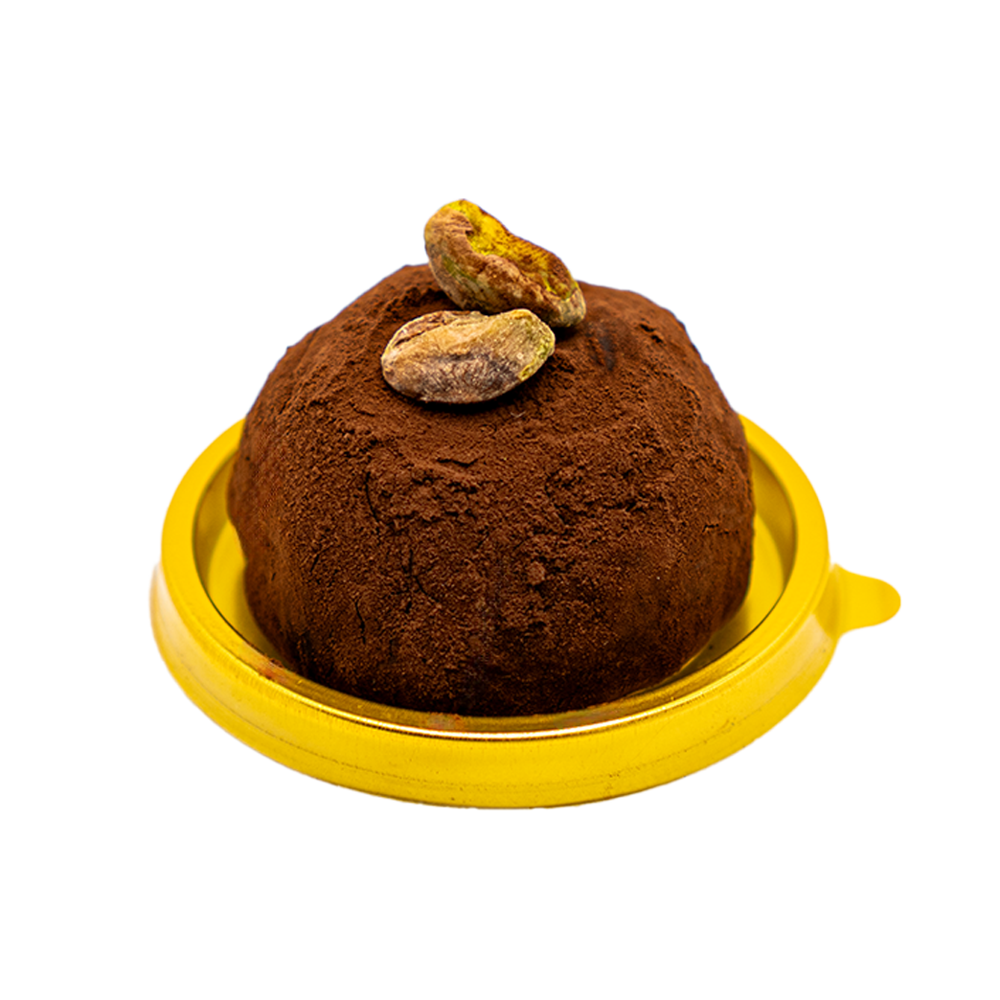
Chookie
bukang bibig niya to guys
My Lyel's fav movies hehe
Fav movies ng lyel ko
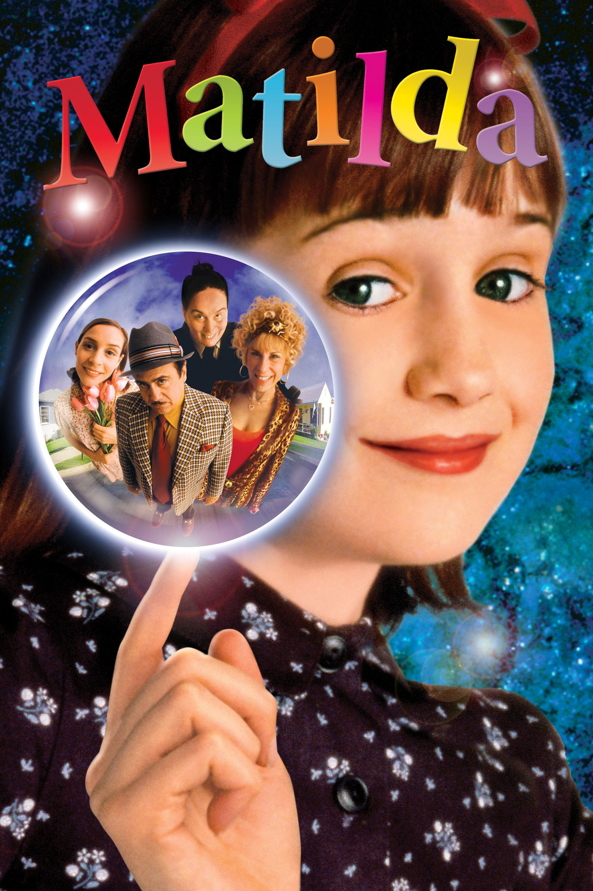
Matilda 🎬
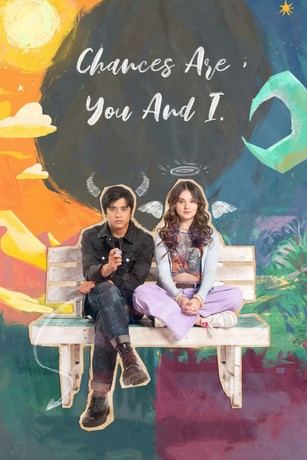
Chances are you and I🎀
Dead Poets Society ✨
"O Captain, My Captain"
Her Favorite Quotes
"Above all, don't lie to yourself" my fav quote hehe
Pouring all my love into these words :( lemme pour my heart out bebi
To My Fav Hooman, Lyel,
Hey, bebi! Happy birthday! :) It's been 445 days in total since we started talking. You're the only person who has ever made me feel so loved and appreciated. You're the first person who changed the way I see myself. You made me a completely different person. There are times when we get into arguments, and there are times when every argument scares me to my core. You helped me overcome my so-called "paranoia." I'm paranoid about losing you. I'm writing this on July 6, 2026, which means I'm not done yet. :P I'm writing this directly to the IDE (Integrated Development Environment). HAHAHAHAHA! That's what it means. That's right, bebi, directly to the CODE ITSELF. Now, back to the topic. Hehe. Your presence means everything to me, and that alone has made such a huge impact on my life. I'm so grateful that you chose me, even though I know that I'm very, very much irreplaceable. :( Thank you for everything, bub. :(( July 7, 2026 — I just got home, hehe! Happy na umuwi kasi ang beautiful mo. WAHHAHAHAHAHA! That short pagkikita made my day so much better. I was worried na baka ma-turn off ka kapag sobrang daldal ko sa'yo, pero wala akong pake. Amoy nang amoy sa hair tie mo eh. HEHE. Ewan, I just keep falling more in love with you. More like obsessed, but not in a creepy way or to the point na wala na akong pake sa sarili kong buhay. I'm just scared to lose you. Ganon typa obsessed. HAHAHAHAHAHA! (Di sinasagot yung tanong ko na, "Love mo 'ko romantically?" HAHAHAHAHAHA SHETTTT!) NAKISS NA RIN KITA AT NAHAWAKAN KO NA RIN ANG MGA KAMAY MOOOO! Anyways, I love you more than anything. Please don't leave me. :( Thank you for accepting me, bb. :( Pangangalagaan kita. I'm not just saying this I truly mean it. Thank you. :( I'm writing this on July 29, 2026, at exactly 12:15 AM, and I'm worrying about you. hehe But that's all for now, bebiiiiii! I LOVE YOUUUUUUUUUUUUU! :) August 19, 2026, exactly 7:00 PM — Hello, baby! You finally said yes to me, and BOI, I WAS SHOCKED BECAUSE YOU DID WHAT I'VE BEEN HOPING FOR! :) We've had many misunderstandings, baby, but I'm glad you're still so patient with me. I'm very sorry for sometimes disappointing you, bub. I'm so lucky to have my girlfriend by my side. :) I love you, my girlfriend, Aly. :) Ngayon ko lang ulit na-update yung website kasi eeeee, ang daming updates! Pero I'm so happy that I have you, bub. Hehe. I love you, I love you, I love you. I love you because you're you, bub. September 4, 2026 — IT'S MY BIRTHDAYYYYYY! AND WOWWWWWW!!! YOU MADE SO MUCH EFFORT! I'M SO HAPPY! Walang pangit sa effort at sa taong nag-try, baby. I freaking love you. Tenchuuuu!!! Two more days until your birthday, bub! I'm making your bouquet gift. mueheheheheheh It's our second month together, baby. I love youuuuu!
💝
My Promise to You,
There's a lot to begin with, to be honest. This is my promise to you. It's a little foolish and selfish because how can a mortal offer eternity when I can't even live past the age of 100? But I'll say it anyway as long as I'm alive, I will always love you. I'll offer you my lifelong love and care kasi wala na akong ibang hiling pa kundi ang makasama ka. Kahit saan, kahit ano, basta ikaw. I've already promised myself that I won't look for another because I've already found the one I'm looking for, and it's you, baby. Believe it or not, and I know kilalang-kilala mo naman ako, I'm a man of my words. Even when I can't fulfill something right away, I always find and make a way to keep my promises. I will offer you myself, my lifelong love, and my care. Kahit sobrang dami nating pag-awayan or dumaan pa tayo sa countless misunderstandings, it's always you. I will always choose you, love. Saka kahit ilang beses mo pang i-reject ang help requests ko sa'yo, tutulungan pa rin kita. Ang saya-saya ko kaya kapag natutulungan kitaaaaa! Alam mo naman 'yon, bub bub. And I get sad every time you don't accept my help. AHAHWHAHWHWAHAWHWAHAWHHAHAAHH. I also promised myself that no matter how difficult my situation gets, as long as you need help or there's something I can do for you, I will always show up. I only have you, and I don't want to lose you. I love you more than anything, Lyel. :)
🌷
My Wish to You,
Ang wish ko sa'yo is that, no matter what happens, I want you to take care of yourself and always think about your own well-being. Nakakalungkot kasi, bub, na kahit hindi ikaw ang may kasalanan or wala naman sa'yo ang problema, sinisisi mo pa rin ang sarili mo. What about you? Ayan ang wish ko. Wish ko rin na sana, no matter what life throws at us or whatever misunderstandings and arguments we encounter, we can always talk things through. And sana ako pa rin ang piliin mo. Bub, marami pa tayong pagdadaanan, pero sana gusto kong matutunan mong unahin din ang sarili mo, oki? Alam kong mahirap, pero sana huwag mong kalimutang isipin at alagaan ang sarili mo. At kahit ano pa ang ipakita mo sa akin, hinding-hindi kita aayawan, oki? Mas gusto ko nga na sinasabi mo sa akin ang mga reklamo mo para mas maging aware ako sa mga actions ko. Pasensya na, Mako, dahil sa mga pagkakataong nagkukulang ako. Alam ko rin na hindi mo dapat kailangang paulit-ulit na magreklamo para lang maging aware ako sa mga ginagawa ko. Pero walang dahilan para ayawan kita dahil lang sa pagiging demanding mo or sa mga pagrereklamo mo. Besides, you have never been demanding. I love you more than anything, Mako. I'm sorry dahil minsan nagkukulang ako, at pasensya na rin dahil sa complacency ko. Akala ko kasi okay pa ang mga ginagawa ko, but I realize that I can still do better. I'm sorry, bub. I'll do better. :) Happy birthday, Mako! May more seconds, minutes, hours, days, weeks, months, and years come our way. I love you more than anything. Pangangalagaan kita. :)
Click when you are done reading everything bebi CLICK LANG PAG TAPOS KA NA MAG BASA